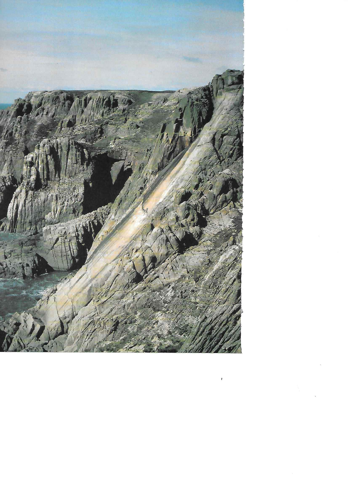

The Lundy Experience
by Steve France
Sailing across the bobbing sea towards Lundy, we thought we were so clever!
For the price of a day return we had just enough time to crack off the “Classic Rock” route called Devils Slide . The ship’s time table indicated a visit of three hours on the island before returning, which was just enough time to walk over to the other side of the island, climb the route and then walk back. It was as simple as that. That was until the loudspeaker announced…
“INFORMATION TO THE PASSENGERS - THE SHIP WILL REACH LUNDY AT FOURTEEN HUNDRED HOURS AND DISEMBARKATION WILL TAKE APROXIMATELY FORTY FIVE MINUTES. WILL PASSENGERS BE AT THE EMBARKATION POINT NO LATER THAN SIXTEEN HUNDRED HOURS. THANK YOU.”
“Hang on, I thought we had three hours!”
We did, from the ship’s arrival to its departure, but unfortunately that did not take into account leaving and boarding.
“Oh No!!”
Ian Lauriston was beginning to look upset at the thought of wasting all that money on the crossing. We could tell that by the way his bottom lip started to curl.
“Wait a minute, we can still do it if we run, but we will have to make sure that we are first off the ship.”
We all reluctantly agreed to give it a go, all except my wife Serina, who was totally repulsed by the idea of running!
That left four of us myself and Ian plus Debbie Hall and Rodger C. nicknamed, Codger , all waiting in the queue trying to get off that damn ship.
Dry land came thirty minutes later leaving one and a quarter hours left to find the route, climb it and get back. We ran.
Navigation was easy due to the fact there was only one path: from one side of the island to the other - and by the time we located the top of the rock route, it was time to head back.
Thirty minutes left! , Ian and Codger lost their bottle and with hearts pounding, started to run back to the ship. I was determined not to waste my investment so, without hesitation, started scrambling down the descent gully to the base of the slab. Debbie shouted “Could I have a go?” Time was pressing. A roped ascent? Not on your nellie!
Running up the slab I met Debbie below the top pitch, dumbstruck from witnessing 300 feet of climbing in one and a half minutes. The feat was due not so much to climbing skill but more to the superb friction of the granite. She threw me the rope.
“I’m determined to climb the last pitch at least!” she screamed.
Debbie was very keen - what could I do but take the rope for her to follow?
The last pitch of Devils Slide is the crux and the best pitch of the route and she enjoyed it, but not the sound of the ship’s horn far away in the distance.
Fifteen minutes left!
“For God’s sake Debbie, go. I’ll catch up with you as soon as I’ve coiled this rope.”
“Please, I used the rope, let me coil it.”
“Don’t be gallant, go!”
Reluctantly she scrambled over the cliff top in her usual care free manner and quickly disappeared from sight. Three minutes later I emerged onto the skyline.
What followed was the run of my life: SACC race in under thirty minutes! It must have been, because I caught up Ian and Codger panting down the path. Another blast from the ship’s horn turned Ian’s face ashen.
“Where’s Debbie?”
“She must be here, because there is only one path and I certainly haven’t passed her.”
We stood there, frozen to the spot. At this point there was another blast from the ship.
After a brief discussion we realised that she must have gone to the opposite side of the island. Should we wait or… Another blast from the ship sent us running towards the beach to be greeted by Serina, close to tears, with the last boat waiting to sail across the short distance to the ship. - “But you can’t go and leave our friend behind on the island,” pleaded Ian to the seaman.
“We must leave NOW!” boomed the man, sympathetic but stern.
It was at this point that Ian gallantly volunteered to stay behind and search the bleak moors for poor Debbie, but again he was rebuffed.
“No one is allowed on the island without permission. Please get on the boat!”
With that, we left our Deb to a fate worse than death, all alone to doss behind a stone wall or a tuft of grass. We sat there on the deck, still geared up, rucksacks and ropes all over the place and surrounded by tourists with slightly bemused expressions. Then came the announcement on the loudspeaker….
“WILL THE CLIMBING PARTY WHO HAS LEFT A GIRL CLIMBER BEHIND ON THE ISLAND to rot PLEASE COME TO THE BRIDGE AT ONCE!” All eyes turned our way. I could have died! The ultimate indignation.
That evening we never went to the pub. Feeling totally ashamed of ourselves, we went to bed wondering if she knew which twinkle in the sky was the Pole Star. Since she had found difficulty in knowing left from right, there was little chance! Poor Deb.
The morning came and following the captain’s instructions we phoned a number on the island to see if Deb had been found. She had, and there she was, on the line!
“Hullo Debbie, are you alright?” piped Ian.
“Yes thanks,” replied Deb. “I found this lighthouse and they were having a party inside - they invited me in and gave me free drinks and food, accommodation for the night and a huge breakfast. I’ve had a whale of a time!”
We waited at the dockside that afternoon. Ian brandished a club, Codger a crowbar as for me, if I could have reached her I would have strangled her! “Come here Debbie!” '

Figure 1: Devil’s Slide Lundy